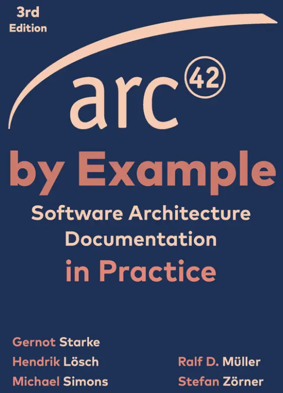
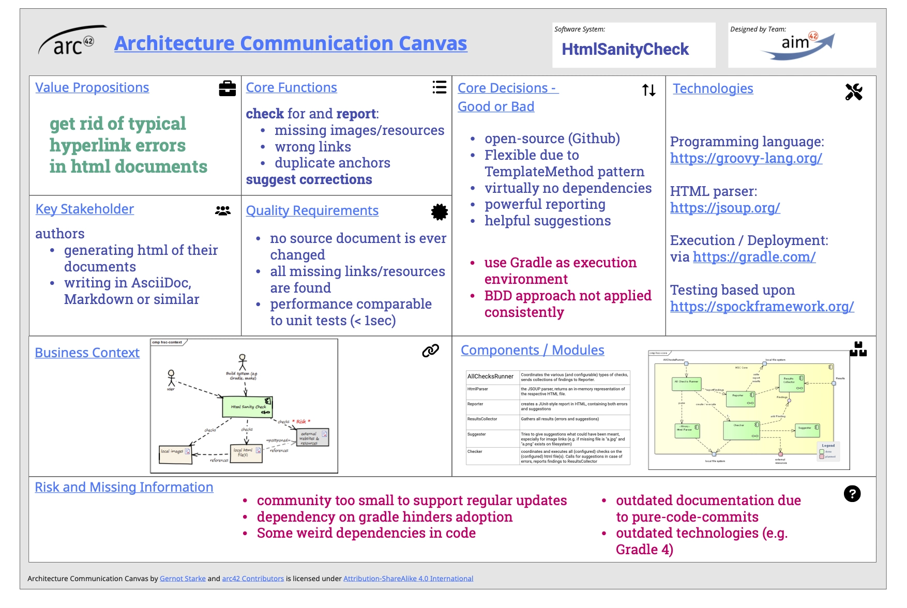

HTML Sanity Checker
A compact web system and a good first example for concise docs-as-code.
Read online →Architecture stories from real systems
Good examples do not show a perfect final document. They show what a team considered important enough to explain.
“Copy the questions, never the answers.”Ralf, on learning from examples
Domain and risk usually matter more than technology when comparing architecture documentation.
A compact web system and a good first example for concise docs-as-code.
Read online →Build automation, plugins, publication pipelines, and architecture close to source.
Read online →Hardware constraints, timing behavior, safety, and physical interfaces.
Find the collection →
